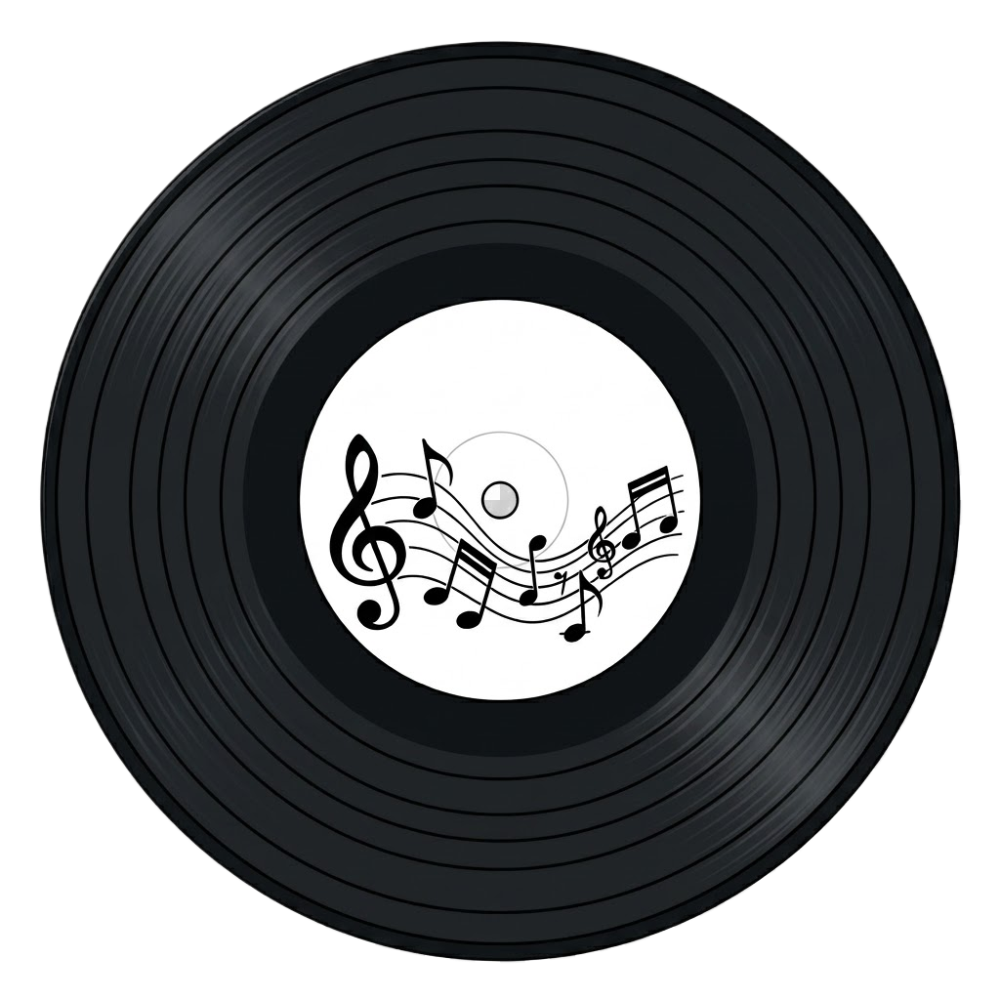

Pitchfork Reviews
Music reviews, artist interviews, and industry news.

Put Me On is a music discovery platform where users can create posts about songs they love and recommend them to others. Each recommendation includes the song title, artist, album, genre, and a short description explaining why others should listen.
The goal is to help listeners discover music through real people instead of relying solely on streaming algorithms.
Future versions will allow users to create accounts, review songs, connect with other music lovers, and receive AI-powered recommendations.
Our mascot represents the music lover inside all of us and will eventually serve as the face of our AI recommendation system.
Future AI Feature:
Users will type a description of the type of music they are looking for. The AI will analyze that description and recommend songs that match the vibe, mood, genre, and themes requested.
Future Community Feature:
Users will be able to create their own song recommendations and reviews. Each post will contain:
Song: Less Than Zero
Artist: The Weeknd
Album: Dawn FM
Genre: Synth-Pop / R&B
Less Than Zero combines emotional lyrics with uplifting production, creating one of the standout tracks from Dawn FM. The song captures feelings of regret, self-reflection, and growth while remaining incredibly catchy and replayable.
Put Me On believes that great music should be discovered through real people, not just streaming algorithms. Independent artists deserve more opportunities to have their music heard.
Sign this petition if you support giving independent artists greater visibility and helping listeners discover new music through community recommendations.
Total Signatures: 3
🖊️ Alex from Miami supports this.
🖊️ Sophia from Orlando supports this.
🖊️ Jordan from Tampa supports this.
Music reviews, artist interviews, and industry news.
Community-driven album and song ratings from music fans.